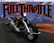
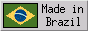
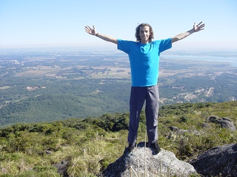

- Mensagem de fim de ano
-
31 Dez 2005
Te desejo em dobro tudo aquilo que você me deseja.
- Vou pra praia
-
30 Dez 2005
Tchau Curitiba, até Fevereiro. Oi Matinhos, lembra do
Janeiro passado? Vamos fazer de novo?
- Uma notícia emo (ouvindo Yellowcard)
-
15 Dez 2005
Sim, ainda existe um coração aqui dentro. Pensei tê-lo perdido, mas não. Se bem me lembro, a última vez que ele se manifestou já faz quase dois anos. Então calou-se. Ou melhor, foi calado. Uma medida drástica, porém necessária para mantê-lo seguro, longe de problemas. Desde então tentaram libertá-lo, dominá-lo, conquistá-lo, possuí-lo, mas as defesas estavam bem posicionadas e nada o atingiu. Após 17 meses de resistência obstinada, um acordo foi proposto e uma trégua foi estabelecida. Ele estava livre novamente. Mas algo estava errado. Apesar de livre, continuava inerte. Vá! Viva! Ame! E nada. Como um pássaro que permanece na gaiola mesmo após aberta a porta, agora ele não sabia mais o que fazer. O preço do cárcere foi alto demais. O acordo foi então desfeito, porém já não haviam mais motivos para retomar as defesas. Seguiu-se um período de paz inquietante. Iria ele voltar à vida algum dia? Felizmente voltou. Hoje. É bom sentir novamente. A alegria, a euforia, a energia, o bem-estar, a paz. A ansiedade, a insegurança, a incerteza, a decepção. Tudo em um só dia, tudo muito intenso. Perfeito. Ela é de outro alguém, mas dessa vez a posse não importa. Gostar sem beijar, desejar sem ter. Obrigado, B.
- Quero ser o Dhalsim
-
12 Dez 2005
Já tentei duas vezes, sem sucesso, "fazer academia". Uma lá pelos 16 anos e outra lá pelos 23. Meu recorde de permanência foi dois meses. Musculação é simplesmente chato. É um esforço repetitivo e entediante que não parece levar a lugar algum. Praticando esportes como surfe ou skate, a motivação é o prazer imediato gerado pelo movimento, sendo o esforço um mero requisito mecânico. Você não surfa para "ficar forte", você surfa por prazer e acaba ganhando definição muscular. Na musculação não há prazer, o esforço contínuo é o único meio de atingir um objetivo de looongo prazo. Certo, musculação é chato e pronto.
Porém, contrariando a lógica e ignorando as tentativas anteriores, lá fui eu fazer a inscrição na academia... Isso foi no início de Outubro. Além de ter quebrado meu recorde de permanência, surpreendo-me ao perceber que estou gostando. A musculação em si continua chata como sempre, mas os instrutores são legais, estou ampliando o círculo de amizades e de brinde ainda tem a "paisagem florida". Ah, também tem uma bicicleta com monitorzão, tipo fliperama, com um joguinho de tanques de guerra. Você pedala e o tanque anda. Tem dois manches para controlar a direção e atirar mísseis. Desnecessário comentar que é meu exercício preferido.
Além da rotina diária de cargas, séries e repetições, para relaxar também estou fazendo Yôga lá na academia. Nunca tinha feito antes, mas achei muito massa. Estica daqui, alcança dali, faz força, treme, tenta manter o equilíbrio, respira e sorriso no rosto! Saio da aula leve, tranqüilo, anestesiado. Volto para casa Zen, dirigindo a 20 km/h, assobiando e achando que a vida é bela. Bem, toda essa história foi para dizer que meu objetivo de vida agora é virar o Dhalsim. Ainda falta aprender pirofagia, raspar a cabeça e ficar marrom. Yôga-fáááier!
- O Cheiro do Ralo
-
04 Dez 2005
Reli o melhor livro nacional que já li. O Cheiro do Ralo, de Lourenço Mutarelli. Recomendo. O cara trabalha na loja de antigüidades. Ele é o dono. O ralo do banheiro fede. O cheiro de merda causa alucinações. Ou serão os remédios? Não, não esse remédio. Esse a mãe deixou tomar. Eu não gosto dela. Eu não gosto de ninguém. Fome. Hora de ver a bunda. Gorda e disforme, é perfeita. Eu pagaria para ver aquela bunda. Será que o olho vai gostar dela? Tenho que cimentar esse ralo, o portal dos infernos. E então, de onde vem o cheiro?
- Não fazem mais jogos como antigamente
-

03 Dez 2005
Esse sábado o Nissin (guitarrista da banda) veio aqui em casa e papeando sobre jogos, fui mostrar para ele o Full Throttle. A última vez que joguei já fez aniversário de 10 anos, não lembrava de absolutamente nada. Assistimos a introdução e sem dar dicas, deixei que ele experimentasse o jogo. Não há instruções, não tem help, não tem Clippy. E nem precisa! Somente com desenhos, sons e diálogos o jogo "se explica" e o controle é feito com o mouse. Nada de joystick ou teclado. Saiu da lata de lixo, falou com o cara do bar, pegou a chave da moto, ... e cinco horas depois, chegamos na porta da fábrica da Corley Motors.
Já passava da meia-noite e o que era para ser um "Olha que legal esse jogo. Massa. Pode crer." virou uma jogatina divertida de horas a fio. Impossível algo parecido com esses jogos novos joiados 3D palhas de PlayStation e assemelhados. Seu realismo é plástico, a jogabilidade é complicada e as personagens são vazias e sem carisma. Eu parei no Super Nintendo, dali para frente os jogos ficaram chatos. Deixaram de ser lúdicos para ficar tentando imitar o mundo real. Prezam o primor visual e qualidades técnicas, deixando o conteúdo de lado.
A realidade virtual poligonal e multiprocessada não consegue fazer jogos gostosos de jogar como um Street Fighter II (original, 8 personagens para escolher, sem mods), um Super Mario World ou qualquer adventure da Lucas Arts (Full Throttle, The Dig, Day Of The Tentacle, Monkey Island e outros). Todos estes jogos rodam no computador (Mac, Linux, Windows), basta instalar os emuladores
Snes9x e ScummVM. Ah, por falar em SFII, uma vez eu e o Nissin nos quebramos durante horas em 79 lutas seguidas, terminando com empate técnico de 40 a 39. Mas essa é outra história...
- II Test-drive de Carveboard
-

03 Dez 2005
Hoje aconteceu o segundo test-drive de carveboard daqui de Curitiba, uma reunião descontraída que tem como objetivo mostrar o carrinho ao público e incentivá-los a experimentar, dar uma volta. Dessa vez o ponto de encontro foi em uma loja de surfe e andamos na rua ao lado. Vieram bastante visitantes e a reação ao dar a primeira volta é a mesma de sempre: o sorrisão no rosto e o palavrão na boca: "Caral..., que massa!", ou "Cara, que tesã...!", ou "Tesã... pra caral...!", ou variações :)
Abel, surfista e longboarder, testou os limites do carve descendo a rua no gás e fazendo manobras típicas de long. Kauê, de 10 anos, também se jogou na ladeira sem medo, descendo junto com seu pai (Batata, dono da loja) e sua mãe (Keila, surfista). Foi um drop em família, bonito de ver. E assim foi, uma tarde de diversão surfando no asfalto.
O ânimo deu lugar à apreensão no fim do dia quando a Keila (que estava mandando bem nas descidas) se desequilibrou em uma curva, caiu do carve e fraturou o pulso. Dali foi direto para o hospital e foi preciso fazer cirurgia. Este foi o primeiro acidente grave em mais de um ano de carve em Curitiba :(
- Processo de desnerdização
-
30 Nov 2005
Foram 8 anos trabalhando com informática, em funções que exigem concentração extrema e atualização constante: programador, redator técnico e administrador de sistemas. Nas horas vagas mais computador, escrevendo guias, apostilas, livros, programas e sites. O imediatismo e obsolescência rápida do conhecimento me deixam com a sensação de que muito do que construí tinha prazo de validade. Diferente de um quadro que é eterno, um programa ou um documento técnico precisam de manutenção vitalícia. E quando o cara possui dezenas de documentos e programas para cuidar (meu caso), a vida se torna uma escravidão de atualizações. Sabe aqueles artistas circenses que equilibram vários pratos em varetas? Sempre devem estar atentos a todos os pratos e ir lá arrumar aquele que está quase caindo. Assim é a minha rotina de nerd. E para piorar, o mais divertido é criar coisas novas, materializar idéias (mesmo que eletronicamente). Então de tempos em tempos lá vou eu colocar um prato novo para rodar, aumentando a carga geral.
Cansei. É preciso mudar. Não quero parar totalmente pois gosto muito de programar e escrever. Mas definitivamente é preciso conter essa proliferação descontrolada de demandas. Quero ter a informática como hobby em minha vida, algo que faça esporadicamente por prazer, quando estiver afim e não por obrigação. A ditadura dos bugs e dos usuários é pesada. O objetivo é passar de meganerd a entusiasta. Uma involução necessária para manter a sanidade.
Minhas férias já completaram dois meses. Achei que seria bem complicado o processo de desnerdização, mas me enganei. A vida está mais tranqüila do que nunca. Mudei rotinas, estou adquirindo hábitos novos e o computador cada vez mais perde espaço na alocação de tempo. Para mim é como uma libertação, sem culpa e sem remorso. Ainda há muito a fazer e muitas obrigações para delegar ou abandonar. O número de pratos rodando deve cair drasticamente.
A carreira profissional ainda é uma incógnita. O que sei é que não quero mais brincar de informática. Quem sabe fazer algo relacionado à música ou ao esporte, ou algum trabalho de criação onde a "obra" não exija manutenção posterior constante. A mente está aberta à espera da idéia. Quando ela vier, o ciclo recomeça: aprender e produzir.
- Livro novo - Dominando o SED
-
17 Nov 2005
"Novo" é maneira de falar e na verdade é um meio livro :) Escrevi este livro em 2002, entre os meses de Março e Setembro. É uma obra inacabada, que contém cerca de 60% do conteúdo planejado. Depois de mais de 3 anos mofando aqui no meu disco, resolvi dar-lhe um destino mais nobre. Até pensei em continuar a escrita, mas não deu tesão. Então fiz o PDF do texto como estava, resultando em mais de 100 páginas de puro SED, cobrindo tópicos comuns e avançados. O livro é livre (gratuito e copyleft), baixe-o agora mesmo!
- "Vamos tomar água lá no pedágio?"
-
15 Nov 2005
Feriadão com sol em Curitiba, coisa rara! Eu e o Gabriel (padrasto) decidimos dar um passeio de bicicleta, coisa rápida, ir "ali" na praça de pedágio da saída das praias. Antes das 8 da manhã já estávamos na rua, saindo do parque Barigüi. Cinco horas depois, com 70 km pedalados, estávamos em casa novamente. Diferente do dia em que
descemos até a praia, hoje estava com sol e calor fortes, foi massa. É quase uma hora para atravessar a cidade até chegar na rodovia (12 km) e depois é só seguir pelo acostamento até o pedágio (22 km). Chega lá, bate a foto, toma água e volta :)
Curitiba está láááá atrás...
- /mac
-
14 Nov 2005
Área nova no site, para centralizar as dicas de Mac. Útil se você usa Mac, ou está curioso para saber quais as diferenças mais perceptíveis no uso, sob a ótica de um linuxeiro.
- Contatos do CSV para o tocador de MP3
-
09 Nov 2005
No final da notícia anterior eu citei que seria fácil adaptar o script Python para ler os contatos de um arquivo CSV. Está feito. Agora usuários de Linux e Windows também podem copiar seus contatos para o tocador de MP3. Basta ir no seu programa favorito (MS Outlook, Kontact, Yahoo!, ...) e exportar os contatos para o formato CSV. Então rode este script e ele gerará o arquivo binário que o tocador entende. Copie este arquivo para o tocador e use a sua função "Import" para carregar os contatos. Exemplo: python s1mp3-import-contacts.py -v 2.0 -o outlook contacts.csv. Há três formatos diferentes suportados (-v), tente todos que um deve funcionar no seu tocador. Se o seu CSV precisar de um offset (-o) diferente, avise-me para que eu possa inclui-lo em versões futuras. Relembrando: isso não é para iPods e outros tocadores de grife. Só funciona com tocadores xingue-lingues que vêm com um programa para Windows chamado TELBOOK.EXE.
- Uma vez nerd...
-
29 Out 2005
Estou tentando. Estava indo bem até. Já ia completar um mês sem nerdices. Só ligando o computador esporadicamente para baixar e-mails. Mas uma coisa puxa outra...
Com o roubo do toca-fitas, meu último reduto sagrado de audição de fitas k7 foi maculado. Era o empurrão que faltava para eu entrar de vez na era da música digital. Ao invés de gastar em som automotivo, comprei um tocador de MP3 xingue-lingue. Bacana, gostei. Entre outras firulas, ele tem uma agendinha simples. Os contatos (nome, telefone, e-mail) são editados em um programa tosco no Windows. Primeiro pensamento: "Palha, nem vou usar". Segundo pensamento: "Poderia ser útil ter os telefones à mão...". Terceiro: "Ah, mas não tenho como usar isso no... EI! Será que..." Pronto, o nerd voltou à tona.
Foram horas de puro deleite programativo. Iniciei com análise e experimentações para descobrir o formato usado no arquivo binário que guarda os contatos (santo od). Depois fiz um programinha em Python para gerar arquivos neste formato e finalmente um AppleScript para arrematar, importando todos os meus contatos, já cadastrados na agenda do Mac. Acompanhe o fluxo: o AppleScript extrai e passa meus contatos para o Python, que gera o arquivo binário, que é então copiado para o tocador de MP3 e finalmente importado na agendinha.
Como já havia feito todo o trabalho sujo, acabei fazendo também a página com instruções e pari mais um filho :) Ah, se você tem um tocador parecido mas não tem um Mac, é fácil adaptar o script em Python (está embutido no AppleScript) para ler os dados de um arquivo CSV ou similar.
- Uno arrombado
-
22 Out 2005
Sabadão, carro amanhecido na rua, próximo ao centro da cidade. Ao me aproximar do bólido prateado, uma surpresa indigesta: (1) cacos de vidro na rua, nos bancos e no assoalho do carro (2) fios coloridos e retorcidos onde antes costumava ficar o toca-fitas (3) porta-luvas aberto. Uau, um ladrão pé-de-chinelo desesperado roubou meu toca-fitas tosco!
Reconstituição do crime: Um ser humano está precisando de grana e vê em meu Uno uma possível fonte de renda. Rua escura, sem movimento, parece fácil. Primeiro, estoura o vidro do motorista com a própria mão (havia sangue no banco). Seu amadorismo é gritante, pois qualquer mané micha um Uno. Uma vez dentro do carro, o ser finalmente percebe que não há absolutamente nada de valor para ser levado. Para não perder a viagem, resolveu levar o toca-fitas mesmo, que deve valer 5 ou 10 reais no mercado paralelo. Com a delicadeza de um mamute, arrancou todo o painel central, com rádio, ventoinhas e controles do ar, limpador e desembaçador. Ainda insaciado(a), resolveu levar também o meu porta-fitas (com 12 das minhas melhores fitas) que estava no porta-luvas. De brinde, levou o paninho laranja (provavelmente para estancar o sangue). Lastimável, patético. Eu torço para que ele/ela arranje uma fonte de 12V e ligue o toca-fitas em seu quarto. Além das rádios, vai ouvir um hardcore de boa qualidade :)
Onde antes o som aflorava, agora reside um vazio silencioso...
- Aurelio v2.8
-
07 Out 2005
Essa versão marca o início da reescrita do código, necessária para comportar as funcionalidades novas a serem implementadas. O escopo do programa sofreu alterações significativas que serão percebidas pelos usuários. Várias funcionalidades atuais serão obsoletadas e a compatibilidade com versões anteriores não será mantida. Será um trabalho demorado cujo resultado será incorporado na versão 2.9, sendo que somente a 3.0 será a versão estável. Evolução? Regressão? Mudança.
- Um ano sem Linux
-
02 Out 2005
Após 7 anos de militância ativa pró-pingüim, hoje completo 365 dias sem usar o Linux. E estou feliz :)
A história é inusitada. Em outubro do ano passado eu comprei um
iBook para colocar Linux nele. Em um raro acesso de não-conservadorismo, resolvi experimentar um pouco o tal do
Mac OS X fru-fru, para poder falar mal depois. Os dias passaram e quando fui me dar conta já estava usando o sistema há mais de uma semana, em casa e no trabalho. E o pior: estava gostando, muito.
Era tudo diferente, porém estranhamente natural e instintivo. Foi um mundo que se revelou, soluções diferentes para problemas conhecidos. Então entendi o slogan da Apple: "think different". É bem isso mesmo, pensar diferente. Foi muito difícil se libertar dos vícios do Linux de sempre querer editar .conf, reiniciar serviços, ler manpages/README/HOWTO, monitorar processos, se preocupar com dependências de pacotes e ter sempre aquela incredulidade que algo vá funcionar de primeira. Foram alguns meses para eu me acostumar com esse negócio estranho de tudo simplesmente funcionar. O "just works" nunca fez tanto sentido.
São doze meses de uso diário e intenso e ainda não sei quase nada sobre o seu kernel, drivers, serviços, daemons, subsistemas... E nem quero saber! Quero é dirigir o carro, e não aprender mecânica. Assim posso ocupar todo o meu tempo na máquina com as coisas que gosto de fazer. Isso parece tão simples agora, mas foi necessário eu me sujar de graxa primeiro, para hoje perceber como é bom ser um "usuário final".
- 5 anos de Funções ZZ - Site novo e camiseta
-
30 Set 2005
Exatamente 3 meses após ter anunciado que "grandes mudanças" iriam ocorrer nas Funções ZZ, aqui estão elas. Primeiro, as funções ficaram chiques e agora possuem um domínio próprio na Internet:
FUNCOESZZ.NET. O site também foi melhorado: ampliado, organizado, redesenhado e enjoiado. Um destaque especial vai para a seção "Extras", onde estão as funções feitas pelos usuários. Faça a sua própria ZZ você também! E por último, resolvemos expandir os negócios da firma e entramos no ramo têxtil :) Foram feitas 50
camisetas ZZ, edição limitadíssima. Não é colorida nem "antenada", é uma camiseta de nerds para nerds, feita apenas com caracteres e tem screenshot das funções em ação. É uma camiseta-console :D
- Funções ZZ v5.9
-
30 Set 2005
São duas funções novas nessa versão: zzcalculaip (calcula os endereços de rede e broadcast de um número IP/rede) e zzipinternet (mostra o seu número IP na Internet). Também foram arrumados os filtros e endereços de várias outras funções. Ah, agora o número das versões está mais simples: Ano.Mês (5.9 é 2005-09). Captou a mensagem subliminar? Nosso objetivo é fazer uma versão nova por mês.
- Free as in BIRD
-
23 Set 2005
Faz um mês que pedi as contas na Conectiva, digo, Mandriva. Hoje é meu último dia de trabalho e é também o fim de uma era para mim. Entrei na empresa em 1997, quando ela funcionava em um sobrado e não era conhecida. Comecei como estagiário de meio período, ganhando 150 reais + VT. Eu nem sequer sabia o que era Linux. O Arnaldo (acme) foi meu guru e guiou meus passos, me iniciando em Linux, VI, shell script e mais tarde em Python. A empresa cresceu e eu cresci junto, a Conectiva se tornou parte importante de minha história. Passados 8 anos, o fim chegou. Eu desencantei do Linux, trocando-o pelo Mac OS X e a Conectiva foi comprada pela Mandrake. Não é triste, é uma história que se acaba para poder iniciar outra. Os planos agora são bem simples: não há planos. Tudo o que quero é parar, limpar a mente e viver livre um pouco.
- 2 filhos de Francisco - A história de Zezé di Camargo e Luciano
-
16 Set 2005
Filmaço. Mesmo. Ignore temporariamente o preconceito e vá vê-lo no cinema. Continuo não gostando de sertanejo nem da dupla, mas o filme é 10.
- Adium Book v1.1
-
14 Set 2005
Versão nova do programinha bonitinho. As novidades são o suporte a Jabber, interface melhorada, botões para definir o IM e adicionar cartão na Agenda. Os screenshots na página do programa agora têm setas coloridas fashion que demonstram o uso. Ah, agora todos os botões têm figurinhas, que fófi né? :D
- Arquivo RSS melhorado
-
06 Set 2005
Agora cada notícia vem com a data definida, acabando com os problemas em alguns agregadores. Valeu gwm por me importunar para arrumar :) Também coloquei tempo padrão de refresh (1 dia) e uma fotinha para o feed. Ah, o PHP foi aposentado e agora é um SED macho que gera o arquivo RSS.
- Linuxers no Mac OS X
-
05 Set 2005
Foi criada uma lista de discussão (linux2macosx) para servir de ponto de encontro para os usuários de Linux que hoje também são usuários do Mac OS X. Diferente de usuários clássicos de Mac, pessoas com conhecimento em Linux possuem outras necessidades e usufruem melhor do BSD que roda sob o sistema. Sei que a "comunidade" ainda é minúscula, mas a idéia da lista é juntar os poucos para um dia quem sabe sermos vários. Se você se encaixa no perfil, junte-se a nós!
- Não tem preço
-
27 Ago 2005
Acordar cedo em um sábado ensolarado, ligar o "3 em 1" antigão (com caixonas grandes de madeira), colocar o CD com mp3 de todos os álbuns do RAMONES, ligar o modo aleatório (shuffle) e aumentar o volume.
- Programa novo Adium Book
-
23 Ago 2005
Mais um degrau vencido na escada que leva à perdição, agora cruzei a fronteira dos aplicativos gráficos. Brinquei de fazer janelinha, botõezinhos, menus, tela About, tratar de eventos e cliques, arrasta daqui, arruma dali... O Adium Book é um programa para Mac OS X que serve para manter sincronizados os contatos da Agenda e do Adium (cliente ICQ/MSN/*). O programa foi feito no Xcode (IDE do Mac), a interface Cocoa foi feita no Interface Builder e o código é AppleScript puro. Mas ainda não sou um vendido total, os planos para o futuro são aprender Inkscape,
SVG e JavaScript, para fazer joguinhos bonitinhos no navegador (tipo Flash). É. Pois é...
- Sou um e-mendigo!
-
18 Ago 2005
Semana passada resolvi ligar a opção de doação de $$$ para o projeto txt2tags no SourceForge. Tudo muito fácil, bastou criar uma conta no tal do PayPal e pronto. Na minha visão nerd-cético das coisas, no máximo iam me chamar de vendido (de novo?) e o total de doações ia estabilizar em zero. Mas... hoje recebi um e-mail dizendo que um anônimo caridoso doou 5 dólares! :) Descontando as taxas do PayPal e do SourceForge, fiquei com US$ 3,54. Uau, então Software Livre pode render dinheiro assim? Legal! Agora é só esperar uma epidemia de doações, chutar o emprego e me tornar um e-mendigo profissional. VERDEJANTE III, me aguarde!
- Dicas para atrair colaboradores ao seu projeto
-
16 Ago 2005
Artigo meu publicado na Dicas-L. É um texto rápido, curto, que enumera ações que você pode tomar em seu projeto de software para conseguir colaborações da comunidade. Não é achismo, ele é uma análise da recente chuva de contribuições que o projeto txt2tags obteve, motivada por atitudes simples, mas que fazem a diferença.
- Novidades legais no txt2tags
-
05 Ago 2005
Tem três novidades legais relacionadas ao txt2tags: (1) Documento novo Referência Rápida, um PDF de uma página pronto para imprimir e te ajudar a escrever os arquivos .t2t mais rapidamente (2) Agora as notícias do site podem ser obtidas via RSS (3)
Galeria de Fotos do nerds que fazem parte do time. Tem quase 30 cabeças lá, um timão!
- AppleScript for Python Programmers
-
25 Jul 2005
Durante meu aprendizado de AppleScript, eu freqüentemente comparava as suas estruturas com aquelas que eu já conhecia no Python. Acho mais fácil de fixar assim. Comecei a anotar e quando percebi, tinha um documento extenso em mãos. Assim nasceu o
AppleScript for Python Programmers, que serve para programadores Python aprenderem AppleScript, o "shell" do Mac OS X. Talvez sirva o caminho inverso também, mas não garanto :)
- Lar, doce lar
-
23 Jul 2005
Foto de Gustavo Roberto Rodrigues Gonçalves
- Tudo diferente
-
15 Jul 2005
Nenhum programa novo, nenhum documento novo, nenhum vídeo novo, nenhuma foto nova, nenhuma histórinha nova, nenhum ensaio com a banda, nenhuma viagem. Mas o Inbox, esse continua crescendo que é bonito de ver... Ah, o d00dz voltou.
- Funções ZZ v5.0630
-
30 Jun 2005
Essa versão traz como novidade a zzlocale, que procura códigos de idiomas (de, it, pt_BR, etc). Também tem várias correções em funções que tinham parado de funcionar. Essa é a última versão antes das grandes mudanças que estamos (eu e o Thobias) fazendo. Conforme aprendi na Escola de Marketing Avançado em Chug-Chug, não devo contar nada sobre as novidades, apenas fazer suspense e dizer que vai ser muito legal, fantástico e massa. Ah, quase me esqueço. Previsão de lançamento: em breve.
- iCoisas (momento "Apple é massa")
-
26 Jun 2005
Sabadão frio em Curitiba, dia de produzir algo. Dessa vez fui brincar com o tal de iPhoto, o programa de fotos do Mac OS X. Adicionei umas fotos e fui ver o esquema de show de slides. É tão fácil que nem tem graça: escolhe a música de fundo, o efeito de transição entre as fotos, o tempo de exposição e seleciona as fotos. Pronto. Aperta um botão e ele exporta para um vídeo Quicktime. Fiz uma coletânea das fotos da galera andando de Carveboard com a sonzeira do Tequila Baby de fundo, ficou legal.
Além das fotos, também tenho vários vídeos que a gente gravou andando com o carrinho. Então fui no iMovie e com a "I Don't Want To Grow Up" do RAMONES de fundo, fiz um "clipe". Tudo muito fácil, arrasta daqui, escolhe opções dali, aplica uns efeitos acolá... e saiu um vídeo de 3 minutos. Veja o vídeo e os slides.
Pra finalizar, abri o tal iDVD, escolhi um "tema", arrastei o vídeo e os slides no menu e surpresa! Estava pronto um DVD de
Carveboard, com fotos, vídeo e sonzeira. O pior é que funcionou mesmo e vi tudo na TV, em tela cheia, como se fosse um DVD comercial qualquer.
Incrível como o cuidado na construção das interfaces dos programas, aliado à integração total entre aplicativos faz coisas complexas ficarem simples: um leigo em multimídia fez um DVD. Agora já posso trabalhar em casamentos! :D
- FAQ VERDE
-
23 Jun 2005
Um documento novo, mas que eu já vinha escrevendo há tempos. Juntei nele algumas das respostas mais comuns que mando por e-mail, na esperança de que isso ajude a minha caixa postal a voltar a ser "normal". Já faz muito tempo que não consigo responder e-mails em um prazo razoável e a fila só cresce, cresce...
Lê lá.
- Livro de visitas atualizado
-
19 Jun 2005
Melhorado o script PHP de livro de visitas. A formatação dos recados agora usa estilos (CSS) e está mais flexível. O nome do autor do recado está em destaque e internamente está sendo usada uma lista de definições (<DL>) para o armazenamento.
- txt2tags v2.3
-
17 Jun 2005
Versão nova do polvo vermelho. Essa já fazia meses que estava pronta, mas demorou bastante para eu conseguir fechar o lançamento. Esse programa já ficou grande, são muitos detalhes para acertar antes de lançar cada versão. Tá, chega de choro. As novidades são: a possibilidade de juntar as colunas de uma tabela (colspan), incluir um arquivo de configuração via linha de comando (-C, --config-file) e a suíte de testes que agora acompanha o programa. Ah! Importantíssimo para as relações comerciais do Brasil: parte da documentação do txt2tags foi traduzida para Chinês! :D
- TOC, TOC, TOC... Tem alguém aí?
-
10 Jun 2005
Nas últimas semanas as atividades nerds ficaram estacionadas e o site sem notícias novas. Não fiquei doente nem morri, mas cometi o pecado de ligar a televisão.
A produtividade despencou quando descobri a existência do programa "
Guinness, O Mundo do Recordes" na Rede Record. Que BBB que nada, aquilo sim é Reality Freak Show. Pessoas estranhas fazendo coisas estranhas. Uma mistura de "Se vira nos 30" com "Jack Ass". Os três melhores que já vi foram: (1) O Regurgitador Humano, que engole coisas, as manipula no estômago e traz de volta (tipo engolir um cadeado fechado, depois a chave e um anel e trazer de volta o anel dentro do cadeado) (2) O hindu que rolou (no chão) 4 mil quilômetros em 8 meses (rolando 12 horas por dia, todos os dias), além de já ter ficado em pé numa praça comendo grama durante 7 anos (3) O nerd que resolveu o cubo mágico (aquele dos quadradinhos coloridos, difícil) de olhos vendados (foram 5 minutos analisando o cubo misturado e 5 minutos às cegas girando o cubo até alinhar as cores).
Para piorar a minha situação, antes do programa do Guinness tem um outro parecido, o "As Maiores Curiosidades do Mundo" que segue a linha Freak Show mostrando esquisitices de outros países. E para fechar o pacote Produtividade Zero, antes desse programa tem a novela "
Floribella" na Band, que me cativou devido a sua tosquice inspirada no Chaves (atuações exageradas, situações previsíveis e repetitivas).
É, TV afeta a nerdice, aprendam com os meus erros. Ou não: Floribella (Band 20h10), Curiosidades (Record 21h00), Guinness (Record 21h40), diariamente.
- Funções ZZ v5.0519
-
19 Mai 2005
Essa versão não traz funções novas, mas duas novidades grandes. A primeira é a leitura do arquivo opcional ~/.zzextra, usado para guardar funções extras feitas pelo usuário ou por terceiros, que são integradas no "ambiente ZZ". A segunda novidade é a adapatação de diversas funções para funcionarem em UNIXes e outros sistemas com versões limitadas do SED. Se você usa Solaris, AIX e similares, várias funções passarão a funcionar agora. Ah, zzloteria mostrando quando o prêmio ficou acumulado e zzconverte com temperaturas em Kelvin são outras novidades.
- Adium Buddy Icon to Address Book
-
18 Mai 2005
Mais um programelho novo. Esse serve para brincar com fotinhos. Ele coloca no Address Book (agenda) as fotos das pessoas, usando (via Adium) as fotos que o pessoal coloca no ICQ/MSN/etc. Os contatos da agenda devem estar com os campos de ICQ/MSN/etc já preenchidos.
ATUALIZAÇÃO: Este programa foi aposentado pelo Adium Book.
- Arkanoid.sed
-
13 Mai 2005
A sexta-feira 13 não podia passar em branco. Fiz uma reforma no
Arkanoid em SED (primo do
SedSokoban), que já estava há quase 3 anos intocado desde sua criação. Foi uma mudança interna apenas, agora ele também funciona em versões antigas e limitadas do SED (como a do FreeBSD). O código está bem comentado caso alguém queira entender como foi feito ;)
- iTunes Rename Disk File
-
10 Mai 2005
Um programinha novo em AppleScript para usar no iTunes. Ele renomeia arquivos de música com base nas informações das tags ID3. Também remove caracteres estranhos e (opcionalmente) espaços em branco. É tipo um zzarrumanome gráfico :) Aproveitando o embalo, fiz
uma página mega gay para centralizar os scripts (em inglês).
- txt2regex - Site e manual em Português
-
05 Mai 2005
O Gustavo Roberto Rodrigues Gonçalves fez um trabalho voluntário de traduzir todo o site do programa e seu manual para o Português. Aí está um exemplo de ação positiva, onde ao invés de me mandar um e-mail reclamando que não havia documentação em Português, ele foi lá e traduziu. Valeu Gustavo! Já está tudo no ar. Se você ainda não conhece o programa, aproveite a oportunidade.
- Roda de Pogo - A Dança Punk
-
04 Mai 2005
Roda de Pogo - A Dança Punk é um artigo que explica para os não iniciados como é o "pogo", aquela aparente batalha campal que ocorre na frente do palco em shows de punkrock e hardcore. Longe de ser uma briga, é a dança amigável (porém vigorosa) de amantes da música punk. Escrevi em Janeiro, durante as férias, mas publiquei só agora porque ainda não tinha tido tempo de fazer o esquema de
comentários dos leitores que ficou bem simples e legal.
- Export Contacts to Yahoo CSV v1.2
-
18 Abr 2005
Lançada a terceira versão do meu primero AppleScript, que hoje também ganhou uma pagininha própria, com direito a screenshots. Ele já conquistou alguns usuários na comunidade Apple e parece que vai se tornar mais um filho para eu cuidar... Ainda não me decidi se isso vai ser bom ou ruim :)
- Air Carve
-
17 Abr 2005
Esse domingo fizemos experimentações com uma nova modalidade de
Carveboard, desafiando as leis da gravidade e a resistência do corpo humano. Depois de algumas tentativas os dedos foram ralados e os pulsos ficaram doendo. Ainda bem que o Nissin conseguiu bater essa foto mágica antes de um pacote mais feio. É engraçado que na aterrissagem os pneus cheios quicam, apertando o botão EJECT do carrinho :D
Pro alto e avante!
- RAC v1.3
-
11 Abr 2005
Versão nova do programa agora com suporte a Expressões Regulares! Também tem a opção nova -i para ignorar a diferença entre letras maiúsculas e minúsculas. Já passamos de metade da especificação prevista, o RAC está chegando lá.
- CORRERIA no estúdio
-
01 Abr 2005
Dia primeiro de Abril pareceu um bom dia para fazer algo novo. Fomos ao estúdio dos amigos Lucas e Sid na hora do almoço e lá gravamos nossas musiquetas com uma qualidade melhor do que os ensaios. Continua tosco, é claro, mas agora até é possível entender alguma coisa do que o vocal berra. Todos
os MP3 do site foram renovados e agora estão no site Trama Virtual, que tem streaming e download rápido.
- Artigo - Editando arquivos do OpenOffice.org no VI
-
24 Mar 2005
Esse eu escrevi em Novembro do ano passado, mas acabou ficando no limbo do meu $HOME, agora o reencontrei. É um artigo que analisa a estrutura de um arquivo .SXW (do OpenOffice) e ensina como editá-lo usando o VI. Desvende os segredos do sxw, impressione seus amiguinhos!
Leia agora.
- Funções ZZ v5.0318
-
18 Mar 2005
Versão nova que traz correções para várias funções que estavam quebradas devido a mudanças nos sites de consulta.
- DORT - Usando o Computador Sem Se Machucar
-
13 Mar 2005
Reuni num único documento todas as dicas que eu sigo para ficar horas usando o computador sem cansar nem sentir dores. É experiência pessoal, não é achismo mas também não tem nenhum embasamento médico.
Leia agora.
- Meu primeiro AppleScript
-
12 Mar 2005
Nerd é uma m* mesmo, não tem jeito. Precisei sincronizar meus contatos do Yahoo! com a Agenda do Mac OS X (Address Book) e não tinha nenhum programa pronto para fazer isso. Deixando de lado todas as outras tarefas e fingindo que eu tinha tempo livre, aprendi a programar em AppleScript. A linguagem é bem limitada se comparada ao Python ou Bash, usada principalmente para interagir com aplicativos do Mac OS. Mas é gostosa de programar, é textual. São dois programas, o que migra
da Agenda para o Yahoo e o que migra
do Yahoo para a Agenda. Esse segundo é um Python que gera um AppleScript (tosco!).
- Bate papo no IRC
-
09 Mar 2005
Fui convidado para um bate papo via IRC nessa quarta-feira. Começou às 11 da noite e só terminou depois da uma da manhã. Foram vários assuntos como Madrake+Conectiva, certificação, programação, Linux versus Mac OS X e como arranjar tempo livre.
Leia o histórico.
- CORRERIA - Mais vídeos
-
05 Mar 2005
Três vídeos novos feitos no ensaio desse sábado. A qualidade tosca continua a mesma, porém agora a câmera ficou parada, enquandrando a banda toda de uma vez. O som parece ter melhorado um pouco com as lonas pretas do MST colocadas na parede :)
- Faxina terminada
-
03 Mar 2005
Deu trabalho, mas finalmente terminou a faxina geral no site. A página principal foi limpa e resumida, o conteúdo do site foi organizado em áreas distintas e agora a maioria das páginas e documentos possui uma aparência padrão (usam o mesmo CSS). Depois de mais de 5 anos só entulhando coisas aqui, estava mesmo na hora de colocar a casa em ordem.
- CORRERIA - Vídeo da banda
-
25 Fev 2005
Essa semana descobri o tal do iMovie, programa para editar vídeos no Mac OS X. É tão ridículo de fácil de usar que eu 100% leigo em vídeo consegui fazer um mini-clip com legenda em poucos minutos. Usei um pedaço do ensaio de sábado passado, filmado numa câmera fotográfica digital. Já sentiu a tosqueira né?
Então confira!
- Mandrakização da Conectiva
-
24 Fev 2005
Hoje foi anunciada a compra da Conectiva pela MandrakeSoft, empresa francesa de Linux.
Mais informações,
e outras,
e mais outras.
FAQ: Achei massa. Ninguém foi demitido. Os funcionários estão otimistas. Continuaremos em Curitiba. O salário continua em Reais. Haverá apenas uma distro até o fim do ano (CL+MDK), ainda sem nome definido. Je ne parle pas Français.
- Faxina nos Programas
-
22 Fev 2005
Assim como feito com os documentos, os programas também foram organizados e centralizados no /bin. Textos, figurinhas e causos, além de uma mini ficha técnica para os mais-mais. A faxina geral no site está quase terminando, falta pouco.
- CORRERIA - De volta das férias
-
19 Fev 2005
Nesse sábado foi o primeiro ensaio de 2005 da CORRERIA. Um calor animal em Curitiba e nós no cubículo hermeticamente fechado produzindo fedentina. Foi gravado em fita k7, agora melhorou a qualidade do
MP3 da música nova. Depois a banda toda foi andar de Carve para relaxar.
Waaaaaaaaaaaaaaaaaaaaaaaaaarrrrrrrgggggghhhhhhh
- Faxina nos Documentos
-
16 Fev 2005
Onde antes era o caos, agora há uma ordem. Todos os documentos do site foram agrupados e organizados no /doc. Em especial, agora há um
índice centralizado para todos os textos técnicos que já escrevi, contando com descrição e história. Agora ficou fácil de achar!
- Área nova sobre Música
-
13 Fev 2005
O /musica é o lugar novo para tudo sobre bateria, as bandas, os shows e qualquer coisa relacionada à música que antes estavam espalhadas pelas esquinas do site. Há bastante conteúdo novo também, fotos e uma versão resumida do antigo site da DDD.
- Faça-Você-Mesmo - Tirar os pontos
-
12 Fev 2005
Retirei os pontos do pé em casa mesmo e registrei o procedimento com
fotos explícitas. Rápido e fácil.
É só puxar!
- print "Hello Word"
-
10 Fev 2005
Cá estou eu de volta ao mundo digital. As férias foram reavivantes. Os objetivos de surfe e bicicleta foram cumpridos. As energias foram recarregadas. O único ponto negativo foram 3 pontos no pé por causa de um corte com a prancha. O site também passou por uma reforma geral visando uma melhor organização do conteúdo (que está imenso) e será alterado gradualmente nos próximos dias. Para não perder o costume,
fotos e relato disponíveis.
Solzeira em Matinhos
- FÉRIAS
-
09 Jan 2005
Hoje estou me desconectando. Serão 30 dias sem trabalho, sem telefone, sem internet, sem e-mails e sem nerdices. Vou para a praia virar nativo: surfar e andar de bicicleta. Aliás, fui!
- Ano novo, site novo
-
04 Jan 2005
Troca de cores, mais informações na introdução,
Campanha Trilhardário colocada no final. Quanto mais simples e mais direto ao ponto, melhor.
- Retrospectiva 2004
-
31 Dez 2004
Momento zen de reflexão e nostalgia
No lado nerdz, este foi o ano das palestras e eventos, tendo viajado para 6 cidades e participado de 8 eventos, conhecendo amigos e lugares novos, me divertindo bastante. Também continuei lançando versões novas de todos os meus programinhas e documentos (destaque para Dezembro com 4 lançamentos!) e a venda de apostilas em PDF foi um sucesso total. Me converti para a legião de usuários fanáticos do Mac OS X.
Na Conectiva, programei, trabalhei com a tradução do OpenOffice, escrevi uma apostila para a nova linha de treinameto da empresa e fiz perguntas para a Certificação nova.
No lado pessoal, comprei um Fiat Uno, o orkut me trouxe vários amigos que há tempos não via, tive gastrite, diminuí bastante meu consumo de carne, meu casamento terminou e voltei a morar com a mamãe e viver a vida de solteiro.
Nas atividades suadouras, comecei a escalar indoor, virei carveboarder, voltamos a ensaiar com a banda e voltei a pedalar com mais freqüência (viajando inclusive).
Colocados os pesos na balança, posso dizer que 2004 foi um ano
MUITO MASSA e agradeço a todos que de uma forma ou de outra contribuíram com isso.
- txt2tags v2.2
-
30 Dez 2004
Versão nova com formato novo de documento: Lout. Opção nova --css-inside e traduzido para alemão, francês e espanhol.
- txt2regex na Revista Linux Magazine
-
28 Dez 2004
Um gringo fez um artigo de duas páginas sobre o txt2regex que saiu na Revista alemã Linux User em Setembro. Este artigo foi traduzido para o inglês e saiu na revista
Linux Magazine internacional em Outubro. Agora o artigo foi traduzido para o português e saiu na nossa Linux Magazine nacional. Legal que o artigo já está disponível para leitura no site da revista (
HTML,
PDF).
- Natal Aurelio & Thobias - Funções ZZ e RAC
-
23 Dez 2004
Fim de ano, época de presentes, então hoje eu e o
Thobias resolvemos presentear os usuários com dois lançamentos de peso: versão 4.1223 das Funções ZZ com 5 funções novas: zznatal, zzcpf, zzcnpj, zzsecurity, zzlinha e versão 1.2 do RAC com suporte a endereçamento usando strings. HO! HO! HO!
- Eu no vídeo do ITI
-
20 Dez 2004
O Instituto Nacional de Tecnologia da Informação (ITI) lançou
um vídeo de 15 minutos (mpeg 157Mb) sobre Software Livre e Certificação Digital. Tá, e daí? E daí que eu faço uma rápida aparição nele :) Também tem outros amigos no vídeo, como o Rubens Queiroz, Anahuac e Julio Neves. A entrevista foi em Março de 2004, quando fui para Brasília dar cursos num evento do governo. Era de noite, eu estava cansado. Engraçado que eu falei uns 30 minutos, várias coisas legais sobre o desenvolvimento de software livre, a ajuda da comunidade, os bastidores, mas colocaram no vídeo somente duas frases batidas e sem sal (minutos 7 e 8). Bem, tá lá :)
Blablablablaestoucomsonoblablabla
- sedsed v1.0
-
09 Dez 2004
Após um ano sem atualizações, o depurador/embelezador/HTMLizador de scripts SED ganhou uma versão nova. A novidade é que ficou mais eficiente e conservador, funcionando em SEDs antigões e palhas.
- Mudanças no RSS
-
01 Dez 2004
A formatação foi melhorada e o link mudou. Por favor, não abuse do refresh, esse site é atualizado somente uma ou duas vezes por SEMANA.
- Viagem de bicicleta
-
14 Nov 2004
Hoje foi o dia da intrépida viagem ciclística de cinco sedentários para a praia. Conseguimos!
Leia o relato completo.
Curitiba -> Matinhos, 120Km, 10 horas, chuva, frio.
- txt2tags v2.1
-
13 Nov 2004
Versão nova, com várias macros novas (%%mtime, %%infile, %%outfile, %%toc), traduzido para húngaro e italiano, documentação incrementada e opção nova --quiet.
- Funções ZZ v4.1111
-
11 Nov 2004
Versão nova com zznomefoto.
- !nerd
-
08 Nov 2004
Fim de semana agitado: sexta de noite foram 3h30 de
escalada indoor com os amigos, sábado 4h de ensaio com a CORRERIA (fizemos uma música nova!) e para finalizar, no domingo um passeio de 40Km de bicicleta sob frio e chuva com a parentada. O passeio foi um "aquecimento" para a tentativa de descer até a praia de bike no próximo domingo dia 14. Vamos ver no que dá.
Lagartixa-mode: ON
Friiiiiio na volta de Campo Largo
- Mac OS X (ou VENDIDO - Parte 5)
-
02 Nov 2004
Hoje completa um mês que estou usando unicamente o Mac OS X da Apple. Nada de Linux, nada de Windows, nada de Cygwin. E sabe? Gostei. Gostei não, gostei MUITO.
Tem todas as ferramentas que preciso para trabalhar e para me divertir (Vim, Bash, SED, Python, Firefox, ImageMagick) e apesar de afrescalhado e com um apelo visual joiado, é simples de usar e bem estável e responsivo. Também tem um jeito diferente de trabalhar com janelas, inteligente e prático, usando miniaturização e agrupamento por aplicativo, contando também com uma interface polida ao extremo, sem gordura, realmente limpa.
Após 30 dias de uso intensivo e diário, continuo satisfeito e empolgado, então já posso emitir minha opinião sobre ele: é massa. Ah, não é GPL, não é gratuito, não é abençoado pelo santo Stallman. Acho que queimarei no inferno por usá-lo.
Foto da tela em um dia normal de uso (clique para ampliar)
- Funções ZZ v4.1029
-
29 Out 2004
Versão nova com zzwikipedia, notícias do Yahoo Linux e bugs corrigidos.
- Sobre o site
-
26 Out 2004
Link novo (fica lá no fim da página), listando as ferramentas e serviços que uso no AURELIO.NET.
- Melhorias nas fotos
-
26 Out 2004
Área de fotos ajeitada, renovada e enjoiada.
- I Semana de Informática da FAC
-
22 Out 2004
Fui até Campinas (SP) para ministrar a palestra sobre desenvolvimento de Software Livre, aos alunos da Faculdade Comunitária.
Confira o relato e as fotos!
- O $$$ da Apostila de Shell está rendendo
-
15 Out 2004
A apostila continua vendendo firme e forte, a arrecadação total está chegando nos 2.000 reais! Parte dessa grana usei para comprar o Carveboard e para o resto, liguei o modo Papai Noel e vou investir na comunidade nacional de desenvolvedores de Software Livre. Hoje já saiu 150 reais de premiação a um membro do time de desenvolvimento do txt2tags. Quem sabe você não ganha uma bufunfa também? Veja os detalhes na
página da apostila.
- Área nova sobre Carveboard
-
15 Out 2004
Área nova no site, para centralizar as fotos, picos e nerdices sobre o carrinho. Quer saber o que é um Carveboard, como funciona, ver muitas fotos? Clique no link.
- Artigo sobre VI na Linux Magazine
-
14 Out 2004
Hoje ganhei de presente da Conectiva o número 2 da revista (Setembro), que tem uma matéria minha chamada "Seleção VI-sual" nas páginas 82 e 83. O artigo dá várias dicas de uso do modo visual do editor de textos Vim. O artigo está disponível
no site da revista.
- II Congresso Catarinense de Software Livre
-
09 Out 2004
Fui passear em Joinville para dar duas palestras no evento, com direito a uma esticada para Enseada, uma das praias que mais gosto em Santa Catarina. Leia o relato.
- Aurelio versão nova 2.7
-
07 Out 2004
Agora mais maduro e estável. Ah tá, até parece :D
- Conectiva - Linha de Treinamento lançada
-
05 Out 2004
Foram 5 meses de trabalho pesado, mas finalmente o parto aconteceu:
Lançamento da nova linha de treinamento. Eu escrevi a apostila de "Administração de Sistemas Linux I", além de ter feito a diagramação final e fechamento das outras 3 apostilas. Foi de "virar os zoínho", como diria o mestre Ratinho. Agora é hora de atacar a Certificação, volto daqui alguns meses...
- Marinho perdeu
-
03 Out 2004
Apesar de ter sido bem votado até (1.011), meu tio não foi eleito vereador em Curitiba. Minha entrada na política vai ter que ser adiada ;)
- iBook, a reincarnação
-
02 Out 2004
Após 45 dias de abstinência total em virtude da pifada do iBook, acabaram os dias cinzas, tediosos e torturantes: estou novamente computadorizado :) As atividades nerds serão retomadas em breve e a fila interminável de e-mails pra responder também andará. Tomara...
- txt2regex v0.8
-
28 Set 2004
Após dois anos e meio sem atualização, saiu a versão 0.8 do assistente de criação de Expressões Regulares. Foi corrigido o bug que não deixava ele funcionar na versão mais nova do bash (3.x) e foi adicionado suporte às Expressões Regulares do OpenOffice.org. Ah, também foi traduzido para italiano, espanhol e romeno.
- SED falado
-
22 Set 2004
O amigo Fernando Rodrigues me enviou mandou uma colaboração que há tempos eu queria fazer: ele converteu de Real Audio para MP3 os dois trechos de uma palestra sobre o SED que eu fiz na Conectiva em 1999. Não que o conteúdo seja um primor de dicção ou qualidade, mas é engraçado de se ouvir. Confira.
- Google é legal - Parte 2
-
15 Set 2004
Essa dica veio do amigo Mauricio L. S. Ramos: Se digitar "aurelio" na pesquisa de imagens do Google, adivinha quem é o primeiro cabeção que aparece? :D E isso tanto faz se é no Google Brasil ou no gringo, ou se o nome foi digitado com ou sem acento. Massa!
Tenta lá.
- Reformas no Faça Você Mesmo
-
12 Set 2004
Seção reformada, com fotos e textos novos, mais completa e melhor organizada. Porém nenhum tópico novo, isso fica para uma próxima atualização.
- Comprei o Carveboard!
-
07 Set 2004
A venda das apostilas de Shell foi um sucesso e consegui juntar os 700 reais para comprar o esqueitão. Valeu galera que contribuiu! Como continuo sem computador, o feriado foi uma overdose de carveboarding.
Carve == Cavada == Surfar no asfalto == Massa
- Jacaré do Parque Barigüi
-
05 Set 2004
Sim, ele existe! O Barigüi é o parque mais movimentado de Curitiba, está sempre lotado de gente andando a pé, de bicicleta, fazendo cooper, entre outros. Tem uma lenda que um dia, muitos anos atrás, um cara jogou um jacarezinho jovem no lago do parque e ele foi comendo os peixes (ou sei lá o quê), cresceu e ficou morando ali. Eu nunca tinha visto e achava que era balela, mas hoje, dia quente de sol, eu estava tranqüilamente andando de bicicleta no parque quando de repente:
Parque + jacaré + criancinhas, coisas de Curitiba
- Vote Marinho 11 mil
-
03 Set 2004
Faltando um mês para as eleições, decidi ajudar na campanha do meu tio para vereador de Curitiba. Como tem muitos desocupados que ficam acessando esse site ao invés de trabalhar ou dar atenção para os filhos, vou aproveitar a audiência :) Se ainda não tiver candidato, vote no meu tio. Daí ele vai poder me dar um cabidão e eu ingressarei na política! ;)
- Churrasco, voltei
-
29 Ago 2004
Foram quase 3 meses sem carne para aquietar meu estômago instável e o fim dessa era foi celebrado com um almoço glutão na churrascaria. O período vegetariano foi tranqüilo e instrutivo. Vou diminuir drasticamente o consumo de pobres-animaizinhos-coitadinhos daqui pra frente. Nesse meio tempo fui no médico, que me diagosnosticou com gastrite e me passou um tal de Omeprazol pra tomar que parece estar funcionando, pelo menos no teste da carne ele passou.
- www.CORRERIA.org
-
23 Ago 2004
Comprado o domínio e colocada no ar o site da banda. Lá tem MP3, letras das músicas e alguns textos breves que crescerão com o tempo. O site foi feito com o txt2tags, sendo o primeiro que fiz com um design um pouco mais decente ;) Santo CSS!
- iBook pifou
-
19 Ago 2004
Conector da fonte com mau contato, depois partiu o fio da fonte, depois ele morreu. Entrei para o MSC, o Movimento dos Sem Computador. Todas as atividades nerds sofrerão atrasos, senão parada total, até que a situação seja resolvida... chuinf...
- II Semana de Software Livre da UFPR
-
17 Ago 2004
Hoje ministrei uma palestra de 2 horas sobre desenvolvimento de Software Livre no Centro Politécnico da UFPR. Tinha umas 90 cabeças, entre elas algumas pessoas queridas do meu círculo pessoal, como meus pais, minha irmã Karla, o Groo (amigo dos tempos de CEFET) e o Nissin (guitarrista da banda). Legal! Leia o relato.
- Dialog --tudo v5
-
13 Ago 2004
Após um ano sem atualizações, saiu a versão 5 do
Dialog --tudo, o guia completo do dialog, o desenhador de janelas e botões do modo texto. Agora com exemplos de uso da barra de progresso (gauge) e menu com itens dinâmicos. A lista com todas as novidades está no Changelog.
- txt2tags - Site novo
-

11 Ago 2004
Site remodelado, abusando de CSS para fazer o menu à esquerda e outras frescurites. Ah, bastante gráficos gratuitos também, screenshots e um botãozinho bacana "Made in Brazil".
- Vida de Piá
-
08 Ago 2004
Na quinta-feira ensaio de 2h com o NO SNACKS. Na sexta escalada indoor de 3h. Sábado ensaio de 2h com o CORRERIA, depois direto para o show do CÓLERA com os amigos, com direito a 2h de pogo animado, como há anos eu não curtia. Domingo cansado, quebrado, com hematomas e um sorrisão no rosto :D O show do CÓLERA foi simplesmente animal, os caras ficam mais velhos e cada vez melhores. São 25 anos de estrada, uma das primeiras bandas punk do Brasil. Ah, perdi minha camiseta (!!!) no meio do agito.
Pogo nervoso no show do Cólera
- Finalmente, notícias em RSS!
-
06 Ago 2004
O amigo Deivison Alves Elias do site
Notícias Linux me mandou
um script em PHP que extrai as notícias do AURELIO.NET para o formato RSS. Então, se você já usa o tal do RSS pra ler notícias, aproveite!
- txt2tags v2.0
-
25 Jul 2004
O programa completou 3 anos de vida e foi lançada a tão aguardada versão 2.0! Clica! Clica! Ah, também dei
uma entrevista ao site "Linux Reviews" falando sobre o programa.
- Semana do Aurelio na Dicas-L
-
25 Jul 2004
Terminou hoje a "Semana do Aurelio" na lista
Dicas-L. O Rubens Queiroz, amigão de tempos que sempre me apoiou ajudando a divulgar meus programinhas, resolveu dedicar uma semana inteira de sua famosa lista para reunir links sobre alguns assuntos, um tema por dia. Valeu Rubens! Confira as dicas:
Expressões Regulares,
SED,
Shell Script,
Cygwin,
VI,
Software Livre e
txt2tags v2.0.
- s/DUMBS/CORRERIA/
-
24 Jul 2004
Mais um ensaio megatosco de 3 horas nesse sábado. No final decidimos trocar o nome da banda para CORRERIA. Foi uma decisão difícil, com uma longa conversação que transcrevo aqui:
- (Fejão) Tava pensando, a gente podia mudar o nome da banda pra Correria
- (Aurelio) Massa!
- (Nissin) Massa!
E pronto, trocamos de nome :) O som hoje é diferente, mais tosco que o antigo, então convém mudar. Também gravamos o ensaio e fizemos uns mp3. A qualidade sonora é horrível e tem vários erros, mas lá vão duas amostras recentes deste primor de tosqueira e falta de bom gosto que é o nosso trio:
PASTO (nunca antes gravada, inspirada nos amigos sXe),
OPINIÃO (simples, dançante, boca-suja),
letras das duas músicas.
- III SDSL - Seminário de Desenvolvimento em Software Livre
-
21 Jul 2004
Hoje estive em Lajeado - RS (cerca de 100Km de Porto Alegre), onde fui ministrar um curso de Expressões Regulares no evento. O curso foi show, o pessoal aprendeu rápido e no final, ao avaliar es expressões feitas pelo alunos nos exercícios, estávamos discutindo se \<((0?[1-9]|1[0-9]|2[0-8])/(0?[1-9]|1[012])|(29|30)/(0?[13-9]|1[012])|31/(0?[13578]|1[02]))/[012][0-9]{3}\> era melhor que \<((0?[1-9]|[12][0-9]|3[01])/(0?[13578]|1[02])|(0?[1-9]|[12][0-9]|30)/(0?[469]|11)|(0?[1-9]|1[0-9]|2[0-8])/0?2)/[012][0-9]{3}\>. O que você acha? :)
Veja como expressões regulares são intuitivas!
- Pisando fundo
-
18 Jul 2004
Final de semana agitado, teve ensaio com as duas bandas pra espantar o frio. No ensaio com o DUMBS uma peculiaridade: a empolgação foi tanta que após 2 horas de barulheira, no meio de uma música, de repente o pedal do bumbo foi e não voltou mais. Furou. Coisa de pedreiro que não sabe tocar... Mas de repente ainda rola fazer um remendão tosco hehehe
Ooooooops!
- Mudança de hábitos
-
16 Jul 2004
Faz mais ou menos um mês que comecei fazer duas coisas diferentes: (1) brincar de escalada indoor, fazendo travessias e boulder (ou algo assim :), sem cordas e outras viadagens e (2) como parte de uma experiência científica com meu próprio estômago, parei de comer
carne. A primeira semana foi braba, mas agora já estou tranqüilo.
Prato de pião com "tema" vegetariano
- Conectiva Linux 10 saiu!
-
05 Jul 2004
O melhor CL de todos os tempos? Confira!
Anúncio,
Versão Desktop,
Comprar,
Download. Aproveito para destacar, numa opinião imparcial e impessoal, os três melhores programas do CL 10:
funcoeszz-4.0518,
txt2tags-1.7 e
txt2regex-0.7 ;) Ah, e a caixa também é a melhor de todos os tempos, é verde!
- txt2tags v2.0 BETA 3
-
01 Jul 2004
Saiu o terceiro e último (assim espero) beta da aguardadíssima versão 2.0. Está tudo nos finalmentes, só mais alguns dias de trabalho e depois é só correr para o abraço.
- Revival no 92
-
26 Jun 2004
Mais um ensaio hoje, pelas minhas contas já é o quarto do ano, um recorde absoluto. Logo depois fomos todos no
92 curtir um show de hardcore com 5 bandas. Foi emocionante até. Ir juntos em shows antes era rotina, mas a última vez deve fazer uns 5 anos... Ver as bandas, sentir a energia do palco, tudo isso nos deu um gás e agora acho que finalmente a banda volta de vez à ativa. Estranho foi se sentir um velho, no meio da gurizada de no máximo 18 anos que era a maioria no lugar...
- O Conectiva Linux versão 10
-
25 Jun 2004
Foi finalizado esta semana, com os CDs master gravados. Ainda leva uns dias para chegar nas lojas. Para comemorar, os funcionários ganharam essa camiseta legal e hoje o Homem Pizza foi até a empresa abastecer a festa. Para quem não conhece, é um cara que vai com forno, massa e ingredientes e faz as pizzas na hora, no lugar que você chamar.
Eu te-nho!
Você não te-em! :P
- NO SNACKS também renasce
-
20 Jun 2004
Incrível! Além do DUMBS que está sendo ressucitado, hoje reunimos a outra banda (NO SNACKS) para um ensaio depois de mais de dois anos de total inatividade. Foi difícil lembrar das músicas que são meio complicadas, mas no final até que saiu. Como é bom estar de volta com os amigos, tocando um hardcore e se divertindo.
- Subida do Anhangava
-
13 Jun 2004
Anhangava é o nome do morro de 1420 metros que brinquei de subir nesse domingo com um grupo de amigos. Fica aqui pertinho, uns 40 Km de Curitiba e a subida é rápida, menos de duas horas. A vista do cume é fantástica, o ceú estava 100% limpo com vista do horizonte em 360 graus. Vi tudo: Curitiba, a Serra do Mar, o pico Marumbi, a represa do Iraí (lado direito na foto), Paranaguá e o litoral.

./~ Fly own your way like an eagle ./~
./~ Fly as high as the sun ./~
- 100.000 visitas no AURELIO.NET
-
12 Jun 2004
Tenho um contador de acessos que marca o número de visitas à página principal do AURELIO.NET. Hoje ele bateu na marca dos 100 mil visitantes. Até me assustei com o número pois quando tudo começou não imaginei que um dia chegaria a tanto, afinal, isso aqui é um site pessoal e não de utilidade pública. O site no início (em 1999) era apenas uma única página, com poucos textos e poucos acessos no mês, hoje é um monstro com vários megas de textos e fotos e uma média de 250 acessos por dia!
- No ar artigo sobre Cygwin
-
12 Jun 2004
Adicionadas mais informações na área do Cygwin e colocado no ar
o artigo completo que saiu na Revista do Linux, com todas as imagens e formatação agradável.
- V FISL - Fórum Internacional de Software Livre
-
07 Jun 2004
Aconteceu, e foi MUITO massa. Siga este link para ver as fotos e ler o relato de como foi a viagem até Porto Alegre, o encontro com os amigos e a palestra sobre Expressões Regulares que ministrei para cerca de 150 pessoas! Ser você tirou uma foto em que eu apareço, me mande!
- txt2tags v2.0 BETA 2
-
30 Mai 2004
Na cola do primeiro, já saiu o segundo BETA do programa, que agora foi internacionalizado (i18n) e traduzido para o Português!
Veja o screenshot da interface gráfica e leia tudo sobre as novidades da versão 2.0.
- Novidades sobre o Guia de Expressões Regulares
-
25 Mai 2004
Foram adicionadas duas páginas novas na área do Guia de Expressões Regulares. Uma é o Histórico de Vendas do livro, com detalhes sobre quanto vende por mês e o quanto eu já ganhei de dindin nessa brincadeira (tem gráficozinho). A outra é a
Galeria de Fotos dos Leitores, que pretende mostrar ao mundo que tipo de malucos gostam de Expressões Regulares. Mande a sua foto!
- txt2tags v2.0 BETA 1
-
23 Mai 2004
Depois de muuuuuuuuita espera, finalmente foi lançado o primeiro BETA da tão aguardada versão 2.0 do txt2tags, que é um marco no seu desenvolvimento. As novidades são muitas: XHTML, ~/.txt2tagsrc, %!includeconf e muitos outros esqueminhas bacanas.
- DUMBS ensaiando
-
22 Mai 2004
Terceiro ensaio do ano. Definitivamente este é o ano mais frenético e agitado dos último tempos :D
- Funções ZZ v4.0518
-
18 Mai 2004
Versão nova com zzbovespa e zzloteria.
- Página nova sobre Expressões Regulares
-
11 Mai 2004
Depois de muito tempo jogada às traças, a página sobre ERs foi totalmente remodelada. É vergonhoso admitir, mas sofri uma recaída e o lado designer/fresco tomou conta. Muitos gráficos gratuitos e cores joiadas. Mas o objetivo é, assim como as páginas de VI,
SED, Shell e Cygwin, centralizar todos os links e documentos sobre o assunto.
- Repeteco de ensaio do DUMBS
-
08 Mai 2004
Caramba! Dois ensaios no mesmo ano!!! Isso é um marco na história da banda :) Será que finalmente dessa vez voltamos à ativa? A barulheira foi num quartinho lá em casa, vida longa ao roque pauleira! Valeu Gra pela presença e pelas fotos.
A volta dos mortos-vivos
- Google é legal
-
06 Mai 2004
Interessante, hoje descobri que se digitar "aurelio" no Google, adivinha qual a primeira página que aparece? :) Assim, se você esquecer o endereço deste site - que é muito complicado e extenso - basta fazer: http://google.com.br --> aurelio --> Estou com sorte
- E na Conectiva, é OpenOffice na cabeça
-
05 Mai 2004
Após um tempo brincando de aplicar revisões no OpenOffice, agora mudei de projeto aqui dentro e continuo tendo que usar o OpenOffice... Já está parecendo perseguição... Estou oficialmente atolado de trabalho até não sei quando, escrevendo a nova linha de apostilas de treinamento da empresa e tentando gerenciar o processo ao mesmo tempo.
- Vou pro FISL!
-
02 Mai 2004
Minha palestra foi aprovada para o
V FISL - Fórum Internacional de Software Livre. Aí vamos nós! É uma emoção especial participar deste fórum. Ano passado eu fui como "visita" e gostei muito do evento. Foi o primeiro evento de Software Livre que fui, onde conheci pessoalmente o Julio Neves e onde ele e o Rubens Queiroz encheram minha cabeça para começar a fazer palestras também. Gostei da idéia e comentei com meus amigos Rudá e Leslie que no próximo ano, eu iria voltar ali como palestrante. Aconteceu! Chuinf, Chuinf... A palestra será sobre Expressões Regulares, no dia 5 de Junho, sábado, horário indefinido ainda.
- II Encontro LinuxChix-BR
-
01 Mai 2004
Dia do Trabalho, tem que trabalhar! Hoje fiz
minha palestrinha de Desenvolvedor de Software Livre no evento das LinuxChix, em São Paulo. Foi show, casa cheia (200!), palestra animada, galera dizendo que curtiu, amigos por lá, muito massa.
- I SCSL - Semana de Capacitação e Desenvolvimento em Software Livre
-
28 Abr 2004
Fui pela primeira vez a Brasília, para participar como instrutor no mega treinamento do governo para mais de 2.000 funcionários públicos. Ministrei os cursos de Expressões Regulares, VI, Python e Shell. Leia o relato.
- 'aurelio+milene'.split('+')
-
27 Abr 2004
Passados exatos 30 dias do ocorrido, creio que já é hora de torná-lo público para evitar confusões. Após 4 anos de união (2+2), meu casamento com a Milene foi terminado. Os detalhes permanecerão na intimidade, então simplesmente não pergunte.
- RAC v1.1
-
20 Abr 2004
Versão nova do vaporware mais comentado e badalado dos últimos anos, com centenas de milhares de dólares gastos em marketing!
- Passeios em Brasília e São Paulo
-
10 Abr 2004
Agora no fim do mês dia 26 vou dar uma voadinha para perto do Lula participar de um mega evento de treinamento em Linux lá. Depois vai ter o evento das LinuxChix em São Paulo no dia do trabalho. Vai ser uma semana agitada e divertida!
- I Semana de Software Livre na UFPR
-
30 Mar 2004
Hoje foi o dia da maior palestra que já ministrei até hoje, num auditório lotadão com 150 pessoas. Foi bem animada, com quase duas horas de falatório. Foi a palestra Como Ser um Desenvolvedor de Software Livre. Leia o relato.
- Funções ZZ v4.0329
-
29 Mar 2004
Versão nova com zzhoracerta e zzmoeda.
- Instalador do Direto GNU para o CL
-
19 Mar 2004
Uma tarefa que tive na Conectiva em novembro do ano passado foi fazer o Direto GNU funcionar no CL 9. Depois de funcionar, comecei a modificar o instalador dele também. O projeto foi abortado e a Conectiva decidiu LIBERAR o resultado deste trabalho para a comunidade, caso alguém queira continuá-lo. Os arquivos estão armazenados aqui no meu site, que é o destino definitivo de todos os tipos de arquivos aleatórios :)
- Revisão da ajuda do OpenOffice
-
10 Mar 2004
Você está afim de ajudar a adoção do OpenOffice no governo, escolas e instituições? Quer mostrar para os seus amigos que existe uma alternativa livre ao MS Office, totalmente em Português do Brasil? Então colabore no processo de revisão da tradução dos textos de Ajuda (Help) do OOo. É só ler e axar herros, maiz nada!
- VERDEMÓVEL versão 4.0
-
06 Mar 2004
Hoje finalmente comprei o sucessor da TOYOTA, um UNO 96 1.0 gasolina por 7k7 reais. É frustrante? É claro que é! Nem se compara. Mas dos usados baratos e não muito velhos, o Uno foi que mais se aproximou do que eu queria. E tem muitas semelhanças com a Bandeirante: espaço interno (sou alto, perna comprida), visão panorâmica (vidros grandes, colunas estreitas), faz barulho (carros que não fazem barulho são brochantes), mecânica simples e principalmente: É TOSCO :)
Carro bom é carro tosco
- Entrevista para o Br-Linux
-
05 Mar 2004
Fui entrevistado pelo amigo Augusto Campos (brain) e ele colocou
meu blablabla no newsletter semanal do site dele, o acessadíssimo Br-Linux, que foi enviado aos assinantes hoje. Assine o news para receber as próximas edições que é filézão.
- Sucesu - Palestra Como ser um Desenvolvedor de Software Livre
-
03 Mar 2004
Hoje foi o dia de mais uma "palestrinha" na Sucesu. Mais uma vez não consegui controlar a língua e tagarelei durante as 4 horas da palestra, ainda tendo que acelerar no final pois ainda precisava de mais uma meia hora pra falar tudo :D Leia o relato.
- Mudança de tarefa - De programador a escrevedor
-
26 Fev 2004
Na Conectiva, finalmente vou variar um pouquinho e mudar a rotina de passar o dia no VI codificando algum programa. Agora o lance é ajudar a escrever a nova linha de apostilas de treinamento. Escrever é legal!
- Funções ZZ v4.0219
-
19 Fev 2004
Versão nova com zztempo.
- Sucesu - Palestra de SED e Expressões Regulares
-
18 Fev 2004
Hoje foi o dia de falar sobre esses assuntos legais para uma turminha de 20 pessoas. SED, ERs, quer assunto melhor pra conversar? Foi massa!
Leia o relato.
- Artigo sobre o VI na Revista do Linux
-
16 Fev 2004
Saiu na Revista do Linux desse mês um artigo que escrevi sobre o VI, páginas 58 e 59. O texto
Pulando com o VI mostra como fazer um uso ágil do VI, abolindo as setinhas e a tecla Delete, usando os comandos do editor para movimentar o cursor para qualquer lugar do arquivo.
- DUMBS renascido das trevas
-
14 Fev 2004
Após 3 anos de total inatividade, FIZEMOS UM ENSAIO!!! O Nissin (guitarra) voltou a morar em Curitiba, então conseguimos nos reunir e ficar 2 horas trancados num estúdio suando, fazendo barulho e se divertindo! Pá tu pá tu pá tu pá tu, ahhhhhh que saudades... Será que agora finalmente a banda ressurgirá do limbo?
- Apostila de Shell - O Retorno
-
10 Fev 2004
Agora como PDF ao invés de impressa no papel e com preço reduzido para 20ão. Tá esperando o que? Aproveita!
- Iogurte
-
09 Fev 2004
Seguindo a modinha e entrando na guerra do "eu tenho mais amigos que você", fiz meu cadastro no orcute. Numa descrição rápida, o Yakult é um sistema de amigos e comunidades patrocinado pelo Google, onde você diz quem são seus amigos e pode ver todos com suas respectivas fotinhos engraçadinhas de uma vez só. Algo como um ICQ misturado com agenda e fórum. 100% fútil, mas serve como um centralizador de contatos.
- Palestras em Curitiba!
-
06 Fev 2004
Foram marcadas quatro palestras minhas na sede da Sucesu-PR, uma dia 18 agora, outras duas em Março e a última em Abril. Os temas são SED, Expressões Regulares, VI, Shell Script e Desenvolvimento de Software Livre. Todas noturnas, das 19 às 22 horas. Mais informações e inscrições no site da Sucesu.
- Apostila de Shell impressa - CHEGA!
-
29 Jan 2004
Hoje a última apostila foi finalmente enviada. Foram 77 no total, agora não quero nem mais ver espirais, envelopes e Correios na frente :) Ainda estou finalizando o esquema novo de venda, espera só mais uns dias...
- Funções ZZ v4.0128
-
28 Jan 2004
Versão nova com zzhora.
- Brincando com quatro joysticks no PC
-
13 Jan 2004
Consegui ligar vários joysticks de videogame na porta paralela do PC para usá-los em jogos. O driver do Linux suporta até 5 joysticks pendurados na mesma paralela. Pendurei quatro e fiquei satisfeito: 2 de Super Nintendo, 1 de Nintendo (tipo arcade) e outro de PlayStation (made in camelô). O Xmame se garantiu na boa e pudemos jogar, er, digo, testar os 4 joysticks no jogo das Tartarugas Ninja. A experiência vai render um artigão pra Revista do Linux, então nem perca tempo me perguntando como é que faz, espera pra ler o artigo completo e detalhado. MKT++ ;)
A maçaroca é feia, mas funciona!
- Fim de ano massa
-
05 Jan 2004
No natal demos uma volta rápida em Floripa e Balneário Camboriú, depois sossegamos em Enseada (São Chico). No Ano Novo fomos direto pra Balneário. Como sempre entupida de gente e com um mega engarrafamento na volta, mas os fogos na virada detonaram. Se contei direito, foram 45 minutos de luz e barulho, massa! Agora de volta ao frio de cinza de Curitiba, quilos de email pra ler, saudades da praia...
- II SDSL - Seminário de Desenvolvimento em Software Livre
-
22 Dez 2003
Coloquei no ar fotos e textos contando como foi a viagem até Campinas para participar do evento, onde ministrei um curso de Expressões Regulares e palestrei sobre desenvolvimento de Software Livre.
- Prompt Doc - Introdução às Expressões Regulares
-
17 Dez 2003
Mais um "prompt-doc", uma proposta de formato novo para documentação de conceitos práticos. Dia 4 foi um de Shell, agora é a vez das ERs. Este documento é o
histórico da linha de comando de uma palestra sobre o assunto que ministrei hoje para alguns funcionários da Conectiva.
- txt2regex - Site novo
-
16 Dez 2003
O site do txt2regex foi remodelado. Aquela coisa marrom horrorosa foi trocada por cores mais leves e o design geral também foi simplificado. Versão nova do programa? Bem, aí já é outra história... :)
- RAC v1.0 lançado!
-
12 Dez 2003
O maior hype de todos os tempos, o vapourware mais divulgado na mídia, a maior campanha de marketing do software livre nacional, finalmente foi lançado! Se empolgue ou se decepcione, mas não deixe de acessar o
site do programa!
- II SDSL - Meu dia de trabalhar
-
12 Dez 2003
O despertador não tocou, acordei atrasado para o curso de Expressões Regulares :/ Mas cheguei na sala antes da 9 ainda e o curso seguiu até às 18 horas, com pausas para lanche e almoço. Tinha cerca de 30 alunos e foi muito bacana, com 100% de aprovação nas fichas de avaliação entregues pelos alunos! Depois fui para a outra sala para a palestra "Experiências de um Desenvolvedor de Software Livre", que foi encurtada para 45 minutos e tive que acelerar a fala :) No final, o lançamento do hypeado RAC. O evento foi sensacional, nota 10 para o Rubens Queiroz e sua equipe! Leia o relato completo.
- II SDSL - Cheguei
-
10 Dez 2003
Aqui estou, peguei o aviãozinho e vim pra Campinas. Hotel show de bola, com Internet na faixa no quarto, banheira, piscina e tudo isso dentro do próprio campus da Unicamp! Hoje pude assistir às palestras de três grandes amigos: Rubens Queiroz, Julio Neves e Franklin Carvalho, e finalmente falei com o conhecido virtual César Brod "ao vivo". As palestras foram muito boas, tão boas que a última foi terminar mais de 10 da noite, uma hora depois do horário previsto. E daqui dois dias... RAC! Leia o relato completo
- TOYOTA is no more &:(
-
08 Dez 2003
Hoje assisti um completo estranho levando ela embora. Acompanhei até o último pontinho azul sumir no horizonte. E ela se foi, para sempre. Após 4 anos de união, foi duro vê-la partir. O motivo é simples: não dava para encarar uma reforma de 5, 6 mil reais e a ferrugem já não podia mais ser ignorada. Tive que vender. O próximo verdemóvel? Sei lá...
Chuinf...
- Prompt Doc - Tira dúvidas de Shell
-
04 Dez 2003
Documento novo, que é o
histórico da linha de comando de uma palestra sobre Shell que ministrei hoje para alguns funcionários da Conectiva.
- txt2tags v1.7
-
30 Nov 2003
Versão nova com o comando %!include.
- 50 apostilas vendidas!
-
27 Nov 2003
Exatamente 3 meses após o início das vendas, atingi a minha meta pessoal de vender 50 apostilas do curso do Shell. Ainda tenho mais umas 20 e poucas "no estoque", porém estas serão as últimas. Sabe que cansa esse negócio de fazer uma por uma, envelopar, ir no correio, etc? :)
- Funções ZZ v3.1124
-
24 Nov 2003
Versão nova com faxina geral, pois vários sites mudaram.
- sem-mouse-HOWTO
-
23 Nov 2003
Coloquei no ar esse documento antigão, de 1999, que estava escondido num diretório aleatório do meu $HOME. O sem-mouse-HOWTO é um guia que ensina dicas de como usar o Linux sem o mouse. Somente para meganerds :)
- sedsed v0.8
-
15 Nov 2003
Versão nova com as opções -n e -H, além de uma limpeza geral no código.
- II SDSL - Seminário de Desenvolvimento em Software Livre
-
14 Nov 2003
Nos dias 11 e 12 de Dezembro, estarei participando do evento em Campinas (SP). No dia 12 vou ministrar a palestra "Experiências de um Desenvolvedor de Software Livre" (duração: 1h30min) e o mini-curso "Expressões Regulares" (duração: 8 horas). No dia 11 vou assistir o mini-curso de Shell Script do amigo Julio. Vai ser massa, chega lá você também!
- Matéria de capa sobre Cygwin na Revista do Linux
-

06 Nov 2003
Além de ter voltado para a Conectiva, também voltei para a
Revista do Linux. Na edição desse mês tem uma matéria de capa sobre o Cygwin com 9 páginas escritas por este que vos escreve. Além disso no CD está o Cygwin, completo e atualizado. Uma boa alternativa pra quem não quer baixar 300 megas de pacotes pela Internet.
- Palestra em Recife?
-
30 Out 2003
Hoje à noite era para eu estar em Recife, para dar uma palestra sobre Software Livre. Mas como essa palestra acabou ficando bem no meio da minha bagunça de se mudar de cidade, emprego novo, procura de casa pra morar, etc, o organizador achou melhor adiá-la. Por enquanto, ainda não há uma nova data.
- Reconectivizado!
-
27 Out 2003
Hoje é meu primeiro dia de trabalho na Conectiva. De novo :) Engraçado isso né? Voltar para a mesma cidade, para a mesma empresa... A impressão que fica é que tirei umas "férias" de um ano e meio em Floripa.
- Info sobre a venda das Apostila de Shell
-
22 Out 2003
Para saciar a curiosidade alheia, coloquei no ar os dados sobre a venda das apostilas.
- Enfim, Curitiba.
-
20 Out 2003
Mais uma vez a TOYOTA veio
completamente entupida, sem espaço livre para colocar uma caixa de sapatos. Até um sofá de três lugares veio lá dentro. A recepção não podia ser mais curitibana: CHUVA, FRIO e CINZA :)
- Gramado? Massa!
-
17 Out 2003
Contrariando todas as expectativas, Gramado é massa! Também foi muito legal o caminho, passando na ida por Urubici (SC) e descendo a Serra do Rio do Rastro com visibilidade 0%. Na volta passamos pelo Canyon do Itambézinho e descemos a Serra do Faxinal até Praia Grande (SC). Pra variar, uma passada rápida em Torres (RS) para relembrar que a única praia legal do RS é palha :P
Cadê a Serra do Rio do Rastro?
Teleférico da Cascata em Canela
- Gramado? Eca!
-
11 Out 2003
Amanhã cedo indo pra Gramado no RS. Ainda não sei o tem pra fazer lá, parece ser mega chato. Vamos ver. Sem e-mails até quinta-feira.
- SedSokoban v0.3
-
11 Out 2003
Versão nova (e agora espero que seja a última). O código foi mudado para ficar mais conservador e funcionar em qualquer versão de SED. Viva o sedcheck.sed que indica o que alterar.
- O site do DUMBS foi atualizado
-
10 Out 2003
Isso mesmo, depois de séculos jogada às traças, o site da banda foi atualizada. Os gráficos gratuitos foram retirados e os links quebrados foram arrumados.
- Meu aniversário
-
07 Out 2003
Fomos pra Curitiba. Festinha, família, procurando casa pra morar, essas coisas... A TOYOTA bravamente já levou 1/3 de nossas tralhas, foi entupida.
- Reconstrução da área de fotos
-
02 Out 2003
Fiz uma mega-ultra-hiper atualização na página de fotos, agora uma dedicação completa ao tema "Ser tosco é..."
- Funções ZZ v3.1002
-
02 Out 2003
Versão nova com zzconverte e zzcontapalavra.
- Mudança de volta para Curitiba!
-
26 Set 2003
Após quase um ano e meio de sol, suor e praia em Floripa, resolvemos voltar pra terrinha. Sabe como é, saudades daquele céu cinza e chuvoso, trânsito parado, estresse... Esse negócio de morar em lugar paradisíaco é muito chato, o estômago já está rejeitando água de côco ;) A previsão é de se mudar lá pelo meio do Outubro.
- Campanha Aurelio Trilhardário
-
26 Set 2003
Leves mudanças estéticas na página principal e o lançamento da campanha Aurelio Trilhardário :D
- Área nova para o Cygwin
-
25 Set 2003
Nasceu uma área nova no site para falar sobre o incrível/fantástico/extraordinário sistema que traz os poderes do Linux para o fru-fru do Windão.
- Sem mais para o momento
-
23 Set 2003
Esse mês foi bem parado de novidades, só brincando de enviar apostilas pelo correio e dando um gás nova versão 2.0 do txt2tags.
- Txt2tags na Revista do Linux
-
20 Set 2003
O txt2tags apareceu na Revista do Linux de Setembro! O amigo Rubens Queiroz (Dicas-L) escreveu um artigo de duas páginas sobre o meu programinha, massa!
- Apostila de Shell à venda
-
27 Ago 2003
Não teve jeito, era tanta gente perguntando que arranjei um esquema para vender a apostila e enviar pelo correio.
Compre a sua!
- Polvo joiado para o txt2tags (ou VENDIDO - Parte 4)
-
24 Ago 2003
A mulher deixou o windão ligado e tinha um tal de Flash MX aberto... Como não tinha ninguém olhando, comecei a apertar uns botões e ele foi desenhando sozinho! Quando fui ver, ele tinha feito um mascote para o txt2tags! Coisa de louco estes programas gráficos... ;)

- Site do txt2tags em Português
-
23 Ago 2003
Este é apenas o início da ofensiva de dominação nacional do polvo vermelho mutante! :)
- Curso de Shell em Sampa
-
08 Ago 2003
Após uma semana de aulas, acabou o curso. Foi uma experiência muito massa, tranqüila. A turma tinha 7 alunos e foram praticamente 9 horas de aula por dia. Agradecimentos ao pessoal da 4linux por ter tornado isso possível! Leia o relato completo.
- Cheguei em Sum Paulo
-
03 Ago 2003
Pois é, depois de mais de 10 anos sem "tirar os pés do chão", avuei de vião nesse domingão. Ter visto a ilha lá de cima foi fantástico, incrível mesmo. Amanhã começa o curso de Shell. O hotel em São Paulo é massa, tem Internet 8)
- iBook com Linux (ou VENDIDO - Parte 3)
-
31 Jul 2003
Com essa história de curso, surgiu a necessidade de ter um notebook para levar os dados e poder se manter conectado. Olhei para o lado, lá estava o iBook empoeirando com seu Mac OS 8.6 palha. Após consultar os amigos "entendidos" em Apple, instalei o
Yellow Dog Linux nele e agora sou um nerd antenado :D
Window Maker joiado powered by Kojima's Software Foundation
- Ufa, terminei a apostila
-
30 Jul 2003
Finalmente terminada a apostila do curso. Foram 85 horas de escrita, que se desenrolaram em 21 dias. Os fontes foram escritos em texto puro, convertido para HTML pelo txt2tags e finalmente para PDF pelo
htmldoc.
- txt2tags v1.6
-
23 Jul 2003
Versão nova com filtros %!preproc e %!postproc.
- CSS é massa (ou VENDIDO - Parte 2)
-
21 Jul 2003
Definitivamente CSS é massa. Eu sempre xinguei, disse que era palha, que era fru-fru, mas agora tenho que morder a língua e admitir que é massa. Acabei de CSSzar o site do txt2tags e também já tinha usado o esquema no Dialog --tudo e no site das Funções ZZ. Bem, já estou usando Windão com mouse, que diferença vai fazer um CSSzinho? :)
- Mudanças na página principal
-
21 Jul 2003
Leves mudanças no visual na página principal e adicionada uma foto minha trabalhando em meu escritório em Canasvieiras :D Também coloquei um "Jogo Rápido" no final da página, com um resumão de tudo.
- Funções ZZ v3.0713
-
13 Jul 2003
Versão nova com zznoticiassec.
- Aurelio, versão Instrutor Linux
-
11 Jul 2003
Nesses 45 dias sem emprego aconteceram tantas coisas boas que eu hoje agradeço por estar em casa :) Muitas coisas mudaram nesse mês e pouco e hoje anuncio outra mudança radical na minha vida: nada de emprego. Vou tentar trilhar o tortuoso e incerto caminho do
Instrutor de Cursos e ver no que dá. Se for massa, beleza. Senão, imprimo meu currículo e volto bater na porta das empresas. :)
- Shell Script - Área nova e Canivete Suíço
-
09 Jul 2003
Finalmente, após mais de 5 anos programando em Shell, criei vergonha na cara e fiz uma pagininha pra linguagem. Tá podre ainda, pequena, mas tende a crescer muito. Em especial tem um doc muito bacana pra quem é programador, o
Canivete Suíço do Programador Shell.
- LIBERDADE e ABUSO
-
02 Jul 2003
Após quase dois anos de experiência na causa do Conhecimento Livre, tive que restringir um pouco as condições de uso da versão online do
Guia de Expressões Regulares. Acesse a página e por favor leia com atenção o desabafo e as "regras". Se você tem bom senso, nada muda. O aviso é para os manézões.
- Logotipo para as Funções ZZ
-
02 Jul 2003
O site das Funções ZZ atualizada e agora as funções têm um logotipo, ou algo parecido... O Sr. Paintbrush foi chamado para me ajudar. Além do logo agora também tem o novíssimo livro de visitas das funções, para os usuários fazerem declarações de amor ao programa :)
- Dialog --tudo lançado!
-
25 Jun 2003
Documento novo que propõe a explicar como usar o Dialog, o programa que faz interfaces com botões e caixinhas no modo texto. É a primeira documentação completa sobre ele já escrita, leia lá.
- Changelog Nerd
-
17 Jun 2003
O Changelog Nerd é um documento novo que reune num lugar só todas as versões de programas e textos que eu fiz. É como uma foto que resume 3 anos de desenvolvimento de software livre. Ufa, é coisa pra caramba...
- Funções ZZ v3.0612
-
12 Jun 2003
Versão nova com zzss, zzm(ai|in)usculas.
- FISL 2003 em Porto Alegre
-
10 Jun 2003
Eu, o Rudá e o Leslie (amigos e conectivos) fomos de TOYOTA até Porto Alegre para participar do FISL, o Fórum Internacional de Software Livre. É um mega-evento que reúne nerds de todo o país, além de gringos. Estava massa, reencontrei vários amigos, conheci outros "amigos virtuais" e nos divertimos bastante.
Leia o relato.

- Fotos da época do Epa
-
01 Jun 2003
Esse final de semana minha família veio nos visitar e minha mãe trouxe a minha caixa gigante de fotos que tinha ficado em Curitiba. Então aguardem, pois dentro em breve a sessão de fotos ficará muito mais recheada de tosquices :)
- Techlink is no more
-
30 Mai 2003
Hoje recebi o aviso prévio na Techlink. Foi uma surpresa. Saíram 3 do time... Quando a grana aperta, não restam outras opções... Veja
meu currículo, estou solto.
- txt2tags v1.5
-
09 Mai 2003
Versão nova com %!cmdline.
- Fotos fotos fotos
-
08 Mai 2003
Tchan, Tchan, Tchan... As organizações Verde têm o orgulho de apresentar mais uma novidade que será um sucesso empresarial absoluto:
a nova área de fotos. Totalmente remodelada, agora contando com diversas fotos inéditas do Aurelio em poses obscenas.
- Funções ZZ v3.0507
-
07 Mai 2003
Versão nova e site novo!
- Reforma na página do Vim
-
05 Mai 2003
Aproveitando o embalo, a página sobre o Vim também foi reescrita. Aaaaah, também atualizei o arquivo de sintaxe
txt.vim, ficou show!
- Reforma na página do SED
-
25 Abr 2003
Finalmente depois de séculos, dei uma ajeitada na
página sobre o Sed, que estava empoeirada e desatualizada.
- SedSokoban v0.2
-
16 Abr 2003
Versão nova, que é uma mera limpeza de código.
- Versão nova do sed-HOWTO
-
15 Abr 2003
Incrível! Após um ano e meio jogado às traças, o
sed-HOWTO foi atualizado!
- O verde666.org vai morrer
-
10 Abr 2003
Depois de quase 3 anos de uso, o www.verde666.org vai ser aposentado e entrará agora o www.aurelio.net em seu lugar. Isso mesmo! Hoje os dois endereços funcionam, mas o verde666 sairá do ar em alguns dias. Conte para os amigos, atualize seus bookmarks, corrija os links de suas páginas! Mais detalhes em breve.
- Cuidado, invasão de gráficos gratuitos!
-
03 Abr 2003
Ó não! A frescurite tomou conta de mim! Agora as páginas MIM e NERD que anteriormente eram somente texto ganharam vários gráficos gratuitos! Todos leves, rápidos de carregar, mas é frescura! Será este o fim do império dos caracteres? Será que os gráficos irão invadir o site todo? Será que a página do aurelio ficará fru-fru?
- Funções ZZ v3.0403
-
03 Abr 2003
Versão nova com zzgoogle.
- Show da Monas Indignadas
-
02 Abr 2003
Você está acompanhando o Livro de Visitas? Várias MONAS INDIGNADAS estão desabafando sua ira no Consultório Virtual Verde. Aproveite! É grátis! ;)
- Dia da Mentira é PALHA
-
01 Abr 2003
É.
- Dicas anti-LER
-
19 Mar 2003
Seção nova na página nerd: "Usando o Computador Sem se Machucar", com dicas de como evitar dores no pulso, braço, olhos e coluna ao usar o computador (e tem foto! hehehehe).
- Funções ZZ v3.0317
-
17 Mar 2003
Versão nova com zzzz --tcshrc.
- Fotos explícitas da TOYOTA
-
12 Mar 2003
Primeiro reflexo da câmera digital: me acabei de tirar fotos da TOYOTA :) Juntando com mais algumas dicas que eu coletei na lista TOYOTEIROS, mais meus arquivos de histórico de reparos e consumo de diesel, tem uma área nova no site: TOYOTA.
- Carnaval sem deserto dessa vez
-
05 Mar 2003
Carnaval. A única coisa que presta é a folga de 4 dias e meio. Dessa vez nada de Atacama. Aproveitamos para dar uma esticada até Foz do Iguaçú. Daqui de Floripa fica longinho até, deu 2.000 Km ida e volta, rodados na maciez e conforto característicos da TOYOTA :)
É claro, aproveitamos para dar uma voltinha no lixão do Paraguai: passar medo, ouvir histórias de assalto, ficar inseguro, deixar o carro em estacionamentos suspeitos (na lado brasileiro) e ficar na expectativa de não ser pego na fiscalização da Aduana. Tudo isso pra comprar porcarias a preços melhores, mas sinceramente, o estresse não compensa. Prometi a mim mesmo nunca mais pisar em Ciudad del Este, vale muito mais a pena pagar os 20% do muambeiro e deixar que ele se estresse e faça todo o serviço sujo.
A notícia boa é que comprei uma câmera fotográfica digital. Finalmente, após quase 2 anos de namoro, criei coragem e abri o bolso. Quase milão gastos numa SONY P-51. É muito dinheiro num trocinho tão pequeno e frágil, mas a longo prazo compensa a grana economizada em filmes e revelações. Mas o melhor é que agora vou poder tirar fotos de todas as inutilidades que eu sempre quiz mas não fazia pra não gastar dinheiro! Digamos que o site agora tende a ficar mais "visual". Ó não, estou me vendendo novamente...
- Funções ZZ v3.0226
-
26 Fev 2003
Versão nova com zzdicportugues.
- txt2tags v1.4
-
18 Fev 2003
Versão nova com alinhamento nas tabelas e CSS!
- Cygwin? Mas hein?
-
14 Fev 2003
Criada uma seção nova para o Cygwin na página nerd. Ainda vou botar mais umas dicas lá, mas agora o mais importante é o link para
este arquivo, que tem dicas de como "turbinar" o sistema.
- txt2tags no FreeBSD
-
12 Fev 2003
Massa! O txt2tags foi "portado" para o
FreeBSD!
- Funções ZZ v3.0211
-
11 Fev 2003
Versão nova, faxina geral.
- A zzdata ficou show
-
07 Fev 2003
Eu gostaria de deixar registrada a minha satisfação em ter feito a zzdata, recém adicionada ao pacote das Funções ZZ. Inspirado por scripts do amigo Julio Cezar Neves (aquele, do livro de shell), essa função deu um trabalhão pra fazer, mas o resultado foi muito gratificante: toneladas de caracteres amontoados em 20 e poucas linhas num código enxuto porém não mantenível :)
- Funções ZZ v3.0207
-
07 Fev 2003
Versão nova com zzdata.
- Funções ZZ v3.0124
-
24 Jan 2003
Versão nova com zzletrademusica.
- sedsed v0.7
-
21 Jan 2003
Versão nova que traz ajustes para funcionar direito no Windows.
- Fotos do casório
-
14 Jan 2003
Finalmente, após dias de trabalho maçante de digitalizar, editar e organizar as fotos do casamento, terminei! O resultado é um álbum de fotos online com 23 fotos, que resumem a cerimônia.
- Massa / Palha
-
08 Jan 2003
Novíssima seção Massa / Palha na página MIM, que será constantemente atualizada com meus gostos e desgostos. 100% inútil, mas é divertido de escrever :D
- Festas de fim de ano
-
07 Jan 2003
Ahhhhhh, como é bom viver de verdade por alguns dias... Passada rápida em Curitiba, Natal no interiorrrr (Barra do Turvo - SP), Ano Novo na praia (São Chico - SC). Nada de computadores, só sossego, surfe e alegria.
O sossego só foi atrapalhado pela trilha sonora trash oficial do verão, repetida à exaustão por todos os lados:
-
./~
Dá beijinho nas meninas, DÁ DÁ DÁ
./~
-
./~
Quem gosta de rodeio bate forte com a mão
./~
-
./~
The roof, the roof, the roof is on fire!
./~

{kind=link}
{kind=link}
{kind=link}
{kind=link}
{kind=link}
{kind=link}